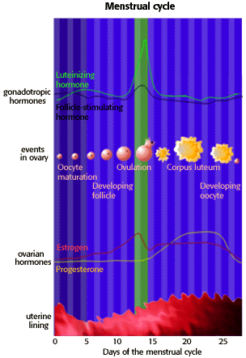

Problem 7: Female Reproductive Cycle
Tutorial to help answer this questionIn a "typical" 28 day female reproductive cycle, on which day following the beginning of the menstrual period is a women most likely to ovulate?
A. 7 B. 14 C. 21
Reproductive cycle
|
The first 12 days
For the first 12 days of the menstrual cycle, estrogen has a negative effect on the production of gonadotropins. Following these 12 days the negative effect changes to a positive effect on the production of gonadotropic hormones. This results in a small increase of follicle stimulating hormone (FSH), but a large increase of luteinizing hormone (LH).
Ovulation
End of the cycle
Continued high levels of estrogen and progesterone produce a negative feedback on the secretion of gonadotropins by the anterior pituitary gland. |
 |
|
This method can be effective at helping achieve a pregnancy as well as at avoiding one. It requires accurate and consistent charting of the menstrual cycle. Some of the factors that indicate fertility include basal body temperature, the position of the cervix, and observation of the cervical mucus. Indicators can be affected by illness, level of activity, stress, food, drugs, alcohol, and hormones.
To prevent pregnancy, abstinence is required during the fertile period. This method is not recommended for women with irregular menstrual cycles. Failure rateThe failure rate for this method of birth control is 5% to 30% or effective rate of 70% to 95%. |


University of Arizona
Tuesday, February 10, 1998
Contact the Development Team
http://www.biology.arizona.edu
All contents copyright © 1996. All rights reserved.